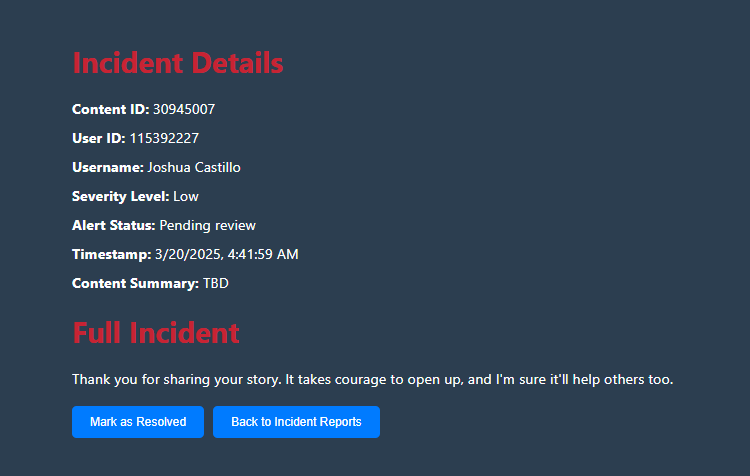
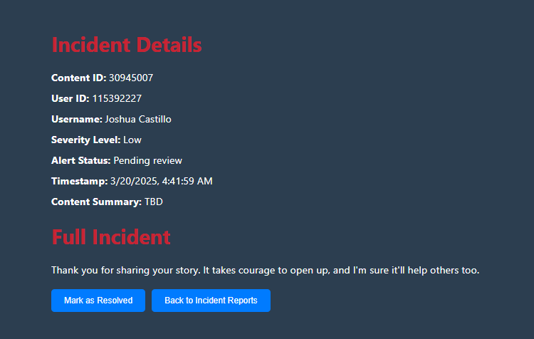
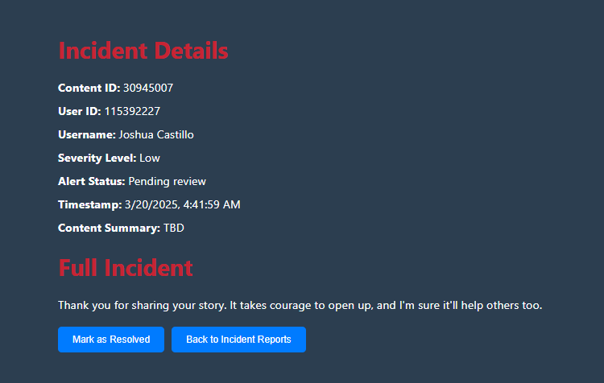
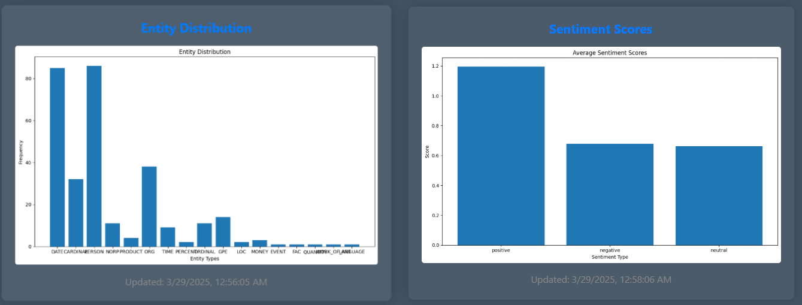
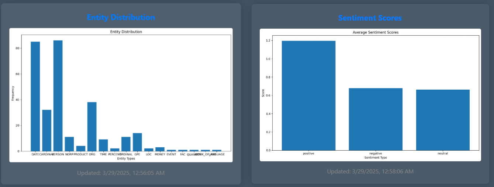
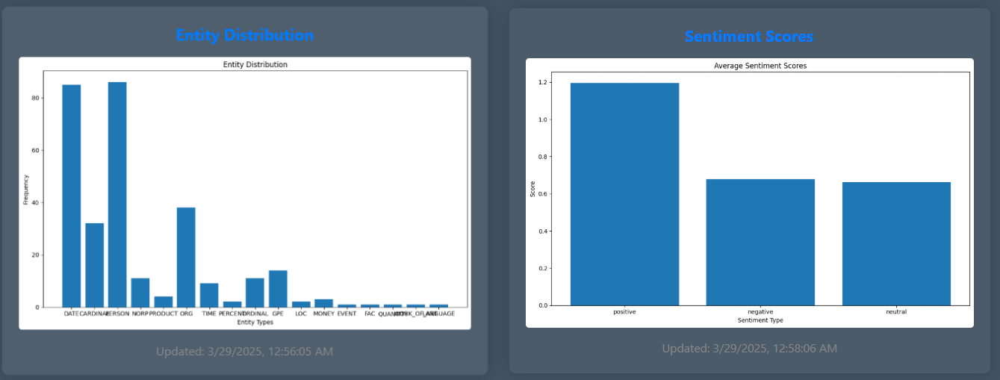

Process
Data Collection:
Preprocessing:
How the AI Works:
Layman's Terms
The AI behind Bully Block is like a smart reader that carefully watches how students communicate online through Canvas. Here's how it works:
It Cleans Up What Students Write:
First, it reads the messages and cleans them up — taking out unnecessary symbols, lowercasing everything, and simplifying words so they're easier to understand.
It Understands The Message:
The system looks at the grammar, what kind of words are used (like emotions or names), and what the message is really saying — kind of like how a teacher can tell if a student is joking or being mean.
It Decides How Serious The Message Is:
Based on tone and certain keywords, the AI gives the message a score — zero, low, or high — depending on whether it seems kind, neutral, or harmful.
It Trains Itself To Get Better:
The AI uses examples of past messages to learn. Some are obvious bullying, others are not. Over time, the AI learns patterns — kind of like how we learn from practice.
It Uses Multiple Brains:
We built different types of AI "brains" — some are fast and basic, others are deep thinkers. Then we compare how they each perform and keep improving them.
It Visualizes Its Learning:
The system shows charts and graphs that help us understand how well it's learning and if it's making mistakes — just like report cards!
It Cleans Up What Students Write:
First, it reads the messages and cleans them up — taking out unnecessary symbols, lowercasing everything, and simplifying words so they're easier to understand.
It Understands The Message:
The system looks at the grammar, what kind of words are used (like emotions or names), and what the message is really saying — kind of like how a teacher can tell if a student is joking or being mean.
It Decides How Serious The Message Is:
Based on tone and certain keywords, the AI gives the message a score — zero, low, or high — depending on whether it seems kind, neutral, or harmful.
It Trains Itself To Get Better:
The AI uses examples of past messages to learn. Some are obvious bullying, others are not. Over time, the AI learns patterns — kind of like how we learn from practice.
It Uses Multiple Brains:
We built different types of AI "brains" — some are fast and basic, others are deep thinkers. Then we compare how they each perform and keep improving them.
It Visualizes Its Learning:
The system shows charts and graphs that help us understand how well it's learning and if it's making mistakes — just like report cards!
Technical Terms
The Bully Block system uses advanced Natural Language Processing (NLP) and machine learning techniques to detect and classify instances of cyberbullying in real-time.
Below is a detailed breakdown of the AI pipeline, including the purpose of each tool and how they are applied in our workflow.
Step 1: Text Preprocessing
To ensure messages are analyzed accurately, the system first refines raw text using a preprocessing pipeline powered by NLTK and spaCy.
NLTK (Natural Language Toolkit) is a Python library widely used for working with human language data. In our system, it handles:
The goal of this phase is to produce clean, uniform text that’s ready for feature analysis and model training.
NLTK (Natural Language Toolkit) is a Python library widely used for working with human language data. In our system, it handles:
- Tokenization – breaking up sentences into individual words or tokens
- Stop word removal – filtering out common words like "the", "is", "on", which don't add meaningful value for classification
- Lemmatization – simplifying words to their base or dictionary form (e.g., "running" becomes "run"), which helps models generalize better
- Strip out punctuation, numbers, and special characters that may skew sentiment and feature calculations
The goal of this phase is to produce clean, uniform text that’s ready for feature analysis and model training.
Step 2: Feature Extraction
Once the text is cleaned, the system extracts meaningful features to help the AI understand both what is being said and how it's being said.
Part-of-Speech (POS) Tagging: Using spaCy, each word is labeled with its grammatical role (noun, verb, adjective, etc.), helping the model interpret context.
Named Entity Recognition (NER): Extracts key names, locations, and dates. This helps in identifying messages that reference real people or events, which may elevate the severity.
TF-IDF (Term Frequency–Inverse Document Frequency): A mathematical method that turns text into numeric vectors based on how important a word is in a document relative to all documents. This representation is essential for training ML and DL models.
Sentiment Analysis:
Part-of-Speech (POS) Tagging: Using spaCy, each word is labeled with its grammatical role (noun, verb, adjective, etc.), helping the model interpret context.
Named Entity Recognition (NER): Extracts key names, locations, and dates. This helps in identifying messages that reference real people or events, which may elevate the severity.
TF-IDF (Term Frequency–Inverse Document Frequency): A mathematical method that turns text into numeric vectors based on how important a word is in a document relative to all documents. This representation is essential for training ML and DL models.
Sentiment Analysis:
- VADER (Valence Aware Dictionary and sEntiment Reasoner), part of NLTK, assigns a compound sentiment score (ranging from -1 to +1) to each message.
- Token-level scoring evaluates individual words.
- We also compute a sentiment balance metric: positive_score minus negative_score, which becomes an input to the classifier.
Step 3: Traditional Machine Learning Models (scikit-learn)
To create a fast and lightweight baseline model, we use scikit-learn, a widely-used Python machine learning library.
Logistic Regression: A statistical model that predicts binary or multi-class outcomes — in our case, zero, low, or high severity.
Support Vector Machines (SVM): Classifies text using hyperplanes and margins, often effective for small to medium-sized datasets.
Model tuning and validation:
Logistic Regression: A statistical model that predicts binary or multi-class outcomes — in our case, zero, low, or high severity.
Support Vector Machines (SVM): Classifies text using hyperplanes and margins, often effective for small to medium-sized datasets.
Model tuning and validation:
- We use cross-validation to ensure the model works well across different slices of the data.
- GridSearchCV helps identify the best hyperparameters (like learning rate and regularization strength).
- Learning curve plots are generated to visualize training and test accuracy across different sample sizes.
Step 4: Deep Learning Models (TensorFlow & PyTorch)
As cyberbullying messages can involve complex context and sequencing, deep learning allows the system to recognize patterns beyond surface-level word frequency.
TensorFlow Models:
TensorFlow Models:
- CNN (Convolutional Neural Network):
- Used to capture localized patterns in text — such as combinations of aggressive words.
- Layers include 1D convolutions, dropout to reduce overfitting, and Batch Normalization for stable training.
- LSTM (Long Short-Term Memory):
- Ideal for understanding the order and relationship between words over a sequence.
- The LSTM is bidirectional and uses embedding layers to convert words into vector space representations.
- We incorporate SpatialDropout1D, ReLU activations, and batch normalization.
- PyTorch offers fine-grained control and faster experimentation during training.
- CNNModel – takes TF-IDF vector inputs and includes multiple convolutional layers, LeakyReLU activations, and dropout.
- LSTMModel – built on tokenized inputs with embedding layers, bidirectional LSTM, and attention mechanisms.
- TextDataset class – A custom PyTorch dataset for efficient batch loading, token padding, and format consistency.
- Fixed dtype issues (e.g., using LongTensor for LSTM and FloatTensor for CNN)
- Modular train_pytorch_model() function to encapsulate training and evaluation
- Saved checkpoints when validation improves
Step 5: Training and Optimization
We use different training strategies tailored to each model architecture.
Optimizers:
Optimizers:
- LSTM: Trained with OneCycleLR to gradually increase then decrease learning rate — this helps escape local minima
- CNN: Trained with ReduceLROnPlateau or CosineAnnealingLR to fine-tune over time
- Gradient clipping: Prevents large updates from destabilizing training
- Early stopping: Halts training if no improvement is seen
- Per-batch learning rate scheduling
- Checkpointing: Automatically saves the best model
Step 6: Classification Logic
Each analyzed message is assigned a severity level based on a set of heuristic and model-driven features.
- Zero: Clearly neutral or positive messages
- Low: Ambiguous tone, moderate negative sentiment, or minor flagged keywords
- High: Aggressive tone, multiple flagged terms/entities, strong negative sentiment
- Sentiment balance metric
- Presence of flagged names or threat indicators
- Adjective density and part-of-speech ratios
- Dynamic sentiment scaling, boosting strong sentiment and downplaying neutral-heavy messages
Step 7: Performance Evaluation
To measure how well our system performs:
- Loss and accuracy metrics are tracked across training epochs
- Models are compared side-by-side (Logistic Regression, SVM, CNN, LSTM)
- Visualizations are used to analyze:
- Loss trends (line plots)
- Accuracy comparisons (bar graphs)
- Final model selection is based on overall accuracy, stability, and real-world interpretability
BullyBlock Incident Reports:
On the Incidents page, users can access a comprehensive table of all reported incidents. Reports can be filtered by
"Resolved" and "Pending Review" statuses. Each entry in the table includes:
 

- Content ID, User ID, and Username of the student involved
- Severity Level categorized as Zero, Low, or High
- Alert Status, indicating whether the incident has been addressed by school personnel
- Timestamp, displaying the exact date and time of the incident

Bullying Analytics:
The Analytics page provides users with detailed insights into bullying incidents and visualizations of the
BullyBlock AI's performance. It includes:

 

- A ranked list of students based on the frequency of reported incidents
- An overview of bullying prevalence categorized by severity level
- A table highlighting key dates with the highest number of cyberbullying occurrences

Notifications
Notifications alert users to new cyberbullying incidents and status changes of previous cyberbullying incidents.

The process followed in BullyBlock involves multiple steps to ensure effective cyberbullying detection.
- Data Collection: Gathering user messages and interactions from Canvas LMS.
- Preprocessing: Cleaning and preparing text for analysis.
- Machine Learning Analysis: Running text through NLP models to detect bullying behavior.
- Alert System: Sending notifications if cyberbullying is detected.
- Review & Action: Educators and administrators review incidents for final action.